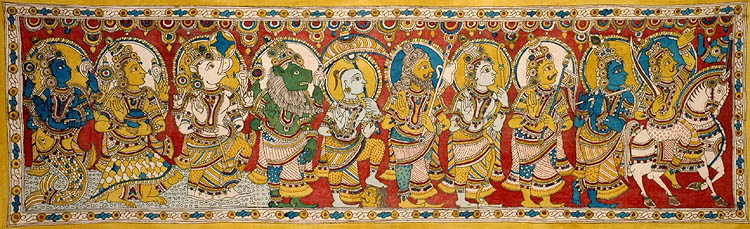

Dashavathara or the ten avatars of lord vishnu is very well known among the hindu community. The ten avatars are Matsya(fish),Kurma(Turtle),Varaha(Wild Boar),Narasimha(Man-Lion), Vamana(Dwarf),Parasurama,Buddha,Rama,Krishna and Kalki.
All of these avatars were assumed by the Lord for one reason-destroying adharma and establishing order on earth.
So why lord vishnu had to assume the avatars of Varaha,Narasimha,Rama and Krishna is an interesting story and that is the story of Jaya-Vijaya
Jaya and Vijaya were gatekeepers to Lord Vishnu's abode -Vaikunta. One day, the four kumaras: Sanaka, Sanandana, Sanatana, and Sanatkumara, the sons of Brahma born from his mind(Manasaputra) came to Vaikunta to visit the lord.
Even though having great age, due to their penance power the kumaras appeared as little children from outside.So as they approached vaikunta jaya-vijaya stopped them and forbade them to visit Lord Vishnu as he was resting at that time.The kumaras tried explaining to them that the lord is always available to his devotees, but in vain.The gatekeepers won't allow them inside.Enraged by this behaviour of Jaya-Vijaya,the kumaras cursed them that they would lose their divinty and will be born as mortals on earth.
Jaya-Vijaya then went to vishnu for help.Vishnu says that the curse cannot be reversed and thus offers Jaya-Vijaya two options.
The first option was to take seven births on earth as mortals but as his devotees. The second was to take three births but as his enemies. After the completion of these births, they would return back to vaikunta. So, to return as soon as possible to the lord, Jaya-Vijaya agreed for the second option.
Thus Jaya-Vijaya were born as : Hiranyakashyapa and hiranyakshu in Krita yuga; Killed by varaha and Narasimha avatars. Ravana and Kumbhakarna in Treta Yuga; Both killed by Rama avatar. Shishupala and dantavakra in dwapara yuga; Both killed by Krishna avatar.
Thus,great figures like ram and krishna came into existence......only by the choice of Jaya-Vijaya......... What if Jaya-Vijaya had chosen the first option? The world might have been a more better place?? Well,let me know your thoughts......